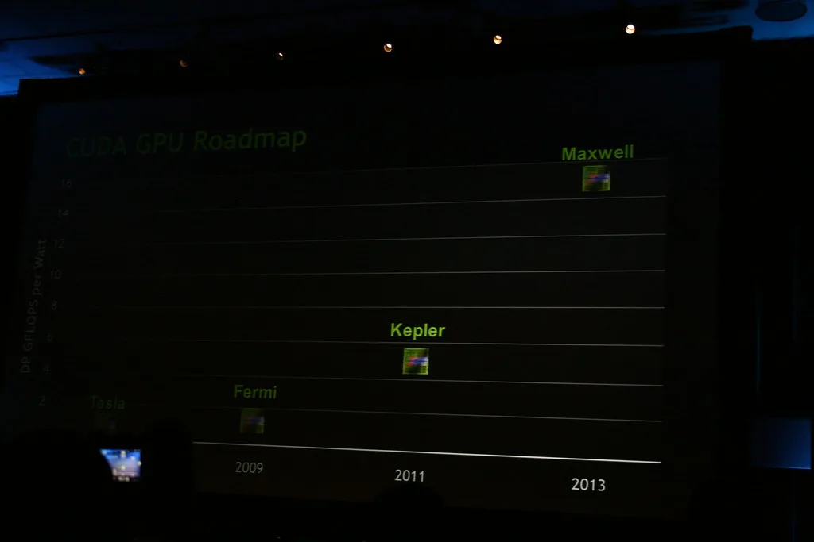
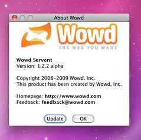

미국 반도체 기업 엔비디아가 젠슨 황 최고경영자(CEO)의 전격 사임 이후 처음 내놓은 분기 실적에서 시장 기대를 웃도는 성적을 거뒀다. 엔비디아는 17일(현지시간) 장 마감 뒤 2027 회계연도 3분기(8~10월) 매출이 1158억달러로 1년 전보다 103% 늘었다고 발표했다. 직전 분기와 비교해도 20% 증가한 수치로, 인공지능(AI) 반도체 수요가 여전히 강하다는 점을 확인시켰다.
성장을 이끈 것은 역시 데이터센터 부문이다. AI 학습과 추론에 쓰이는 그래픽처리장치(GPU)와 관련 시스템을 포함한 데이터센터 매출은 1076억달러로 전체 매출의 90% 이상을 차지했다. 주당순이익(GAAP 기준)은 2.70달러였다. 빅테크 기업들이 대규모 AI 데이터센터 투자를 이어가면서 엔비디아 제품에 대한 주문이 꾸준히 쌓이고 있는 것으로 풀이된다. 엔비디아는 이로써 여러 분기 연속 시장 예상을 넘어서는 실적 행진을 이어갔다. 클라우드 업체뿐 아니라 각국 정부와 대기업이 자체 AI 인프라 구축에 나서면서 수요처가 넓어진 점도 실적을 떠받쳤다.

이번 실적 발표는 경영진 교체 직후라는 점에서 더욱 주목받았다. 젠슨 황은 지난 12일 CEO직에서 즉시 물러났고, 콜레트 크레스 최고재무책임자(CFO)가 CFO 업무를 유지하면서 임시 CEO를 맡고 있다. 이사회는 내부와 외부 후보를 모두 놓고 후임자를 물색하겠다고 밝혔으며, 회사 역사상 처음으로 이사회 의장직을 신설해 하비 존스를 선임했다.
크레스 임시 CEO는 실적 발표 콘퍼런스콜에서 회사의 성장 모멘텀이 여전히 강하다고 강조하며 차세대 AI 플랫폼 베라 루빈의 초기 성과를 소개했다. 다만 창업자이자 30년 넘게 회사를 이끌어 온 황의 갑작스러운 퇴진이 이날 행사 전반에 그림자를 드리웠다는 평가도 나왔다. 일부 외신은 이사회가 황의 복귀 가능성에 선을 그었다고 전했다. 시장 일각에서는 황의 즉각 복귀가 반드시 주가에 긍정적이지만은 않을 것이라는 신중론도 제기됐다.
엔비디아는 4분기 매출 전망치로 1300억달러(위아래 3% 범위)를 제시했다. 월가의 평균 예상치인 약 1253억달러를 웃도는 수준이다. 이 전망에는 중국向 데이터센터 연산용 칩 매출이 전혀 반영되지 않았으며, 회계 일정상 한 주가 더 포함된다. 다만 4분기 매출총이익률은 71~72%로 3분기의 74.8%보다 낮아질 것으로 예상됐다.

주주환원 정책도 이어졌다. 엔비디아는 앞서 9월 자사주 매입 한도를 1500억달러 늘렸으며, 남은 매입 여력은 약 2273억달러에 이른다. 주당 0.25달러의 분기 배당은 다음 달 23일 지급될 예정이다. 실적 발표 직후 시간외 거래에서 주가는 오름세를 보였으나, 상승 폭은 보도에 따라 2~4% 수준으로 엇갈렸다.
시장에서는 엔비디아의 실적이 AI 투자 열기가 식지 않았다는 신호로 읽히면서도, 리더십 공백과 미국의 대중국 수출 규제 강화가 앞으로의 변수로 꼽힌다. 국내에서는 고대역폭메모리(HBM)를 공급하는 반도체 업체들에도 긍정적인 소식으로 받아들여질 수 있다는 분석이 나온다. 차기 CEO 인선이 어떻게 마무리될지가 당분간 엔비디아 주가 흐름을 좌우할 핵심 요인이 될 전망이다.